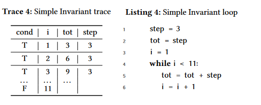
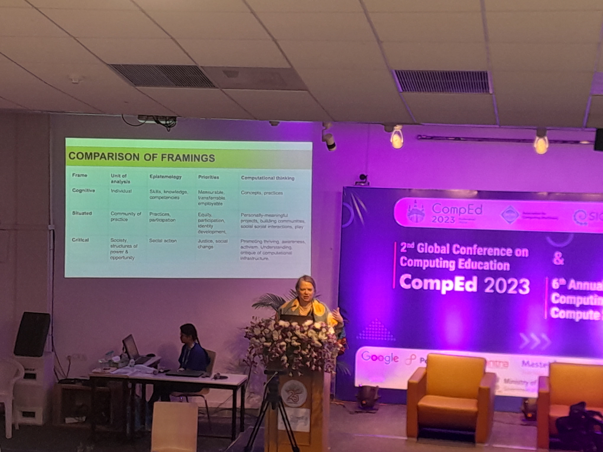
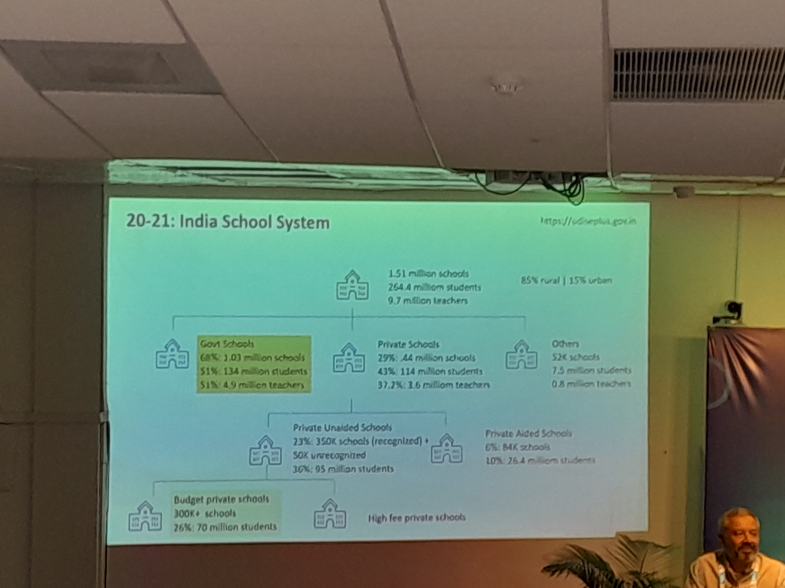
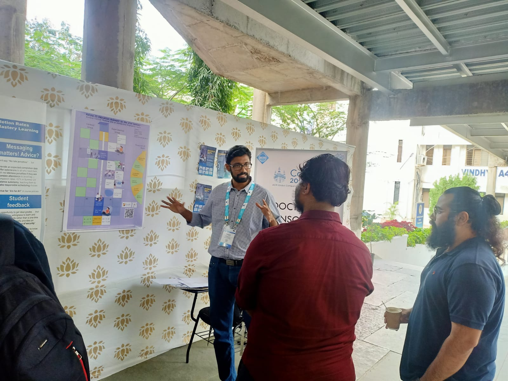
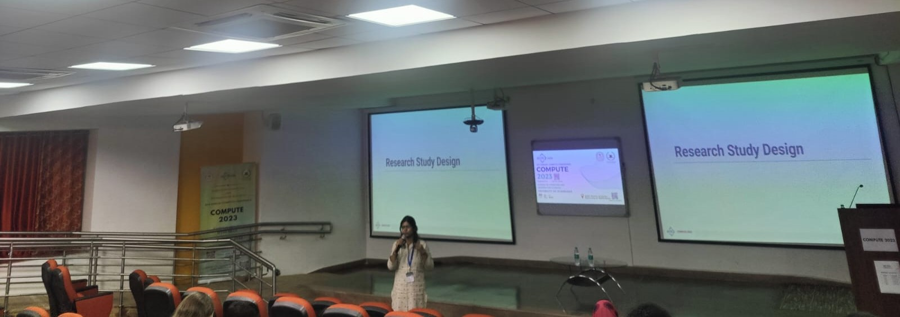
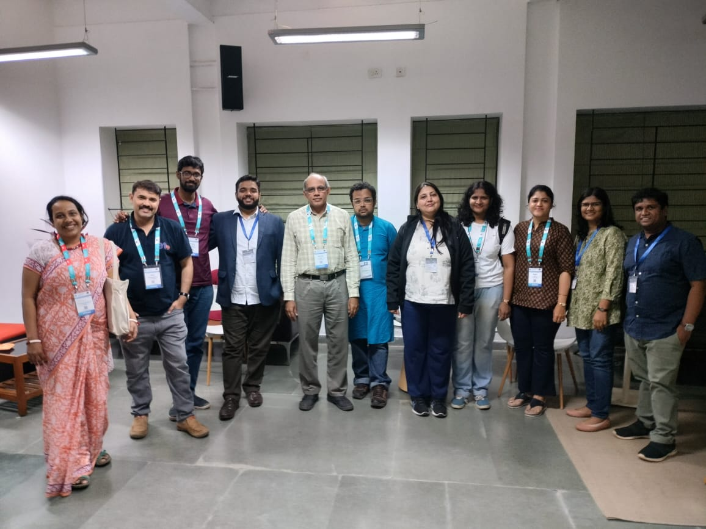

ACM CompEd and COMPUTE 2023: Bridging the Local and the Global
The first ACM computing education conference I attended in India was COMPUTE 2019. ACM India organizes COMPUTE annually, and from 2018, the aim of COMPUTE has been towards improving the quality of computing education in India. On similar lines, SIGCSE introduced CompEd, as the 4th global conference, mainly to foster a CSEd community outside North America and Europe. The first CompEd was held in 2019 in Chengdu, China, with the next edition planned in 2021. And then, as we all know, the pandemic hit, which forced the organizers to consider whether to go with a virtual conference, or wait till things settled down. I’m glad they waited, which resulted in a physical CompEd at IIIT Hyderabad.
I was looking forward to connect with people from India, who I met in previous COMPUTE conferences, and also folks who I got to meet and interact from other SIGCSE conferences. CompEd and COMPUTE had a nice mix of the Indian and the global - a lot of problems and solutions in computing education does translate to the Indian context. On the other hand, there are so many interesting problems to tackle owing to the richness and diversity of India, and the conference led to some interesting discussions on these lines.
I arrived late for CompEd, so I missed the first day’s keynote and morning sessions. And unfortunately, I couldn’t attend many other sessions. Here are some learnings, ideas and takeaways from the sessions I attended (I have interspersed some ideas💡in between along with my reflections).
Teaching Programmers to Think of Program Dynamics
Aamod Sane introduced the trace-first paradigm in his presentation. Students fail in small programs as they do not understand program dynamics i.e. the underlying execution of the program. So instead of starting with the static aspects of a program, like the program text, the idea is to make students construct a trace - which is basically modelling the sequence of values of variables over time. This forms a table like structure as shown in the figure below.

Hence variable assignments become temporal, and changes of variable values are directly visible in the trace. This dynamic behaviour can also help in understanding causal dependencies across and within dependencies in a loop. More details can be found in the paper here
Investigating Themes of Student-Generated Analogies
Analogies are a great way of making connections between what students have already experienced with what they want to learn. In this paper, Colton Harper tried to assess student-generated analogies for computer science concepts they learnt, and used it as a means to gauge student understanding and identified patterns, strengths and weaknesses in them. Colton found that although a diverse range of analogies were created, some were inconsistent and incorrect. We had a fascinating discussion after the presentation on cultural differences in understanding analogies, and assessing analogies which instructors are unfamiliar with. More details can be found in the paper here
💡How can we use analogies in Indian classrooms?
Student Reflections on Service-Learning in Software Engineering and Their Experiences with Non-technical Clients
The next presentation in this session was by Stan Kurkovsky. He spoke about Service-Learning (a term I was totally unaware of), which refers to meaningful community service integrated into instruction. Service learning is a great way to teach civic responsibility as well as strengthen community. In the presentation, Stan described how his students worked with non-technical clients to provide a software solution in their organisation. As expected, students learnt a lot - how different computing topics complement each other, how to translate their ideas to non-technical clients, and how to lower technological barriers for non-technical clients. It also increased students’ motivation to do the project, as they realised that it will directly benefit other people. More details in the paper here
💡Listening to the talk made me wonder how service-learning can be a great way to introduce computing in schools, especially in rural contexts (kind of like the work CSPathshala is doing).
Keynote: Empowering the Next Generation of Computational Thinkers
Yasmin Kafai’s talk focussed on what it actually means to being “computationally fluent” and the different framings of computational thinking one needs to be aware of. Being “computationally fluent” is quite different from being “digitally fluent”, which was the goal of computer science in the 1960s. Today, most students have access to computational devices and engage in several activities such as “Hour of Code”, and work with “Roblox” and “Scratch” (is this true in India? Probably not!). Yasmin described three ways in which one can frame computational thinking -
- Cognitive - which involves competency and skill building
- Situated - which involves personal expression and social connection through computational creation
- Critical - which involves developing agency and voice using computation.

Yasmine stressed on the fact that computational thinking is all of these framings, although K-12 computer science instruction need not encompass all these framings - the answers are diverse for different communities and contexts. Here’s a quote which I really liked from her talk
“Children should learn to program in order to have a deeper sense of the working of their own minds”
Always Provide Context: The Effects of Code Context on Programming Error Message Enhancement
In the session after the morning break, Eddie presented his paper which looked at how large language models like GPT-4 can be help in enhancing programming error messages (PEMs). He looked at four different variants of enhancing PEMs - (1) the standard javac compiler messages (2) Decaf, which is an IDE that does some enhancement on error messages, (3) javac error messages given to GPT-4 and (4) javac error messages along with code context given to GPT-4. As expected, when GPT-4 was provided the error message along with the code context, it provided the correct explanation of the errors, and also provided specific fixes for erroneous programs. Does this mean that GPT-4 is the silver bullet for PEM enhancement? Not quite, as there are issues such as instances of providing confidently wrong answers, as well as accessibility. More details in the paper.
Programmers’ Views on IDE Compilation Mechanisms
BlueJ is a popular IDE for learning programming. Brett Becker and his co-authors looked at how variations in compilation, error indication, and error message presentation between different versions (BlueJ 3 and 4) were perceived by programmers. For example, in BlueJ 3, one has to click to compile, whereas BlueJ 4 has auto compilation features. Although there weren’t much differences at a broad level, the paper does offer certain nuances in difference between the versions, which will likely be of interest to programming IDE designers. More details in the paper.
Working Group Presentation - Teaching Students To Use Programming Error Messages
A working group is a group of around 10 members who work extensively on a particular topic for 2-3 months leading to the conference. Two days prior to the main conference, working groups meet in person, and continue working on their topic. During the conference, the group presents the status of their work and the plan ahead.
I attended the presentation of the working group - “Teaching Students To Use Programming Error Messages”. Dennis Bouvier and his group looked at student experiences of understanding and dealing with programming error messages (PEMs). Students’ usual reactions to error messages are panic, or to look at a particular line number. More than 50% do not even understand the error message. Students were also asked about where they most likely seek help from. Some of them responded that they use textbooks (which is really a bad resource for such things; error messages are almost never mentioned, and even if they are, it is quite generic). Hence, the aim of the working group is to provide resources which can better prepare novice programmers to read and understand error messages. They aim to do this through creating lessons on reading and using PEMs, and developing guidelines for teaching PEM usage.
Panel - Best Practices for Developing Computational Thinking
I really enjoyed this panel moderated by Dan Garcia. The panel members were Sonia Garcha, Madhavan Mukund, and Vipul Shah, all of them who have done significant work to promote computational thinking in schools and universities in India.

Here are some notable quotes and ideas from the panel -
What is the use of introducing new subjects (like Artificial Intelligence) in school (NEP 2020), when you miss teaching computational thinking concepts?
💡What are effective ways in which CT and AI can be blended together in the school curriculum such that both are given appropriate emphasis?
How can you change mindsets of teachers - use an unplugged approach, and don’t use technical terms initially.
We received complaints from teachers (when we used unplugged activities) - why are we not going to labs? (isn’t CS = programming?)
Tribal students use art to express their thoughts.
💡How can we use art in resource constrained communities to teach computational thinking?
How can you teach computational thinking before teaching a programming language? Use datasets from everyday life (Example). (Prof. Madhavan and Prof. G Venkatesh use this approach to teach the Computational Thinking course as part of the IITM BS degree programme )
Poster Presentation - Making CS Education Relevant to the 21st Century
At CompEd, I presented a poster which describes joint work with my colleague at FLAME University, Dr. Balaji Kalluri. Balaji and I taught 2 sections of an introductory programming course last year. Many of the students who took this course were not planning to take computing as their major. Hence, we wanted to introduce computing in a way that was relevant and meaningful to them. We came up with a 6T model which blends six critical types of thinking (logical thinking, systems thinking, sustainable thinking, strategic thinking, creative thinking and responsible thinking) into the design of the course. In the course, in addition to lectures and tutorials, learners were exposed to various activities like micro-lectures and creative projects. The six types of critical thinking were blended into these activities. One section was taught using the traditional way, while the other section was taught using the 6T model. We were interested in finding differences in programming performance between the two sections. Our findings did not reveal significant differences in learning, although we reckon that we might find differences in other measures like satisfaction, engagement. The poster can be found here

Evaluating the Quality of LLM-Generated Explanations for Logical Errors in CS1 Student Programs
Rishabh presented our paper which was a follow up of our ITiCSE paper, where we looked at how well LLMs like GPT3 are able to generate explanations for erroneous student code. We found that some explanations were incomplete and incorrect, and hence could not be directly given to students. In this paper, we wanted to understand TA perceptions of LLM feedback, and do a detailed analysis of LLM feedback for student programs. We asked student TAs to provide feedback to student programs, and rank their peers’ feedback along with the feedback generated by an LLM (TAs were unaware which explanations were LLM-generated). We found that TAs ranked the LLM-generated feedback either as the first or second for most problems. A manual analysis of LLM-generated feedback led to similar conclusions as our ITiCSE paper - the LLM was able to identify at least one logical error in most cases (93%), but we also found at least one incorrect statement in 50% of the cases. More details in the paper.
💡Can TAs or instructors take assistance from LLMs to provide feedback for student programs? What are effective strategies to do this?
Bug-eecha 2.0: An Educational Game for CS1 Students and Instructors
Bug-eecha aims to impart two key skills to students - problem comprehension, and designing valid and through test cases. In the game, for a particular question, a buggy implementation is provided to students. Students have to specify test cases to eliminate buggy implementations. In the second version, the authors improved the interface and also included an initial set of 22 problems and an interface for instructors to create additional problems. More details in the paper. You can try Bug-eecha here
A Bug’s New Life: Creating Refute Questions from Filtered CS1 Student Code Snapshots
Refute questions are questions which offer an alternative to Explain in Plain English (EiPE) questions. EiPE questions provide a code snippet and asks students to explain the purpose of the code. One drawback of EiPE questions is that students who are not proficient in English might not be able express the goal of the code succintly, even though they know what it does. Instead of asking students to write down what the code does, Refute questions provide a set of options, one of which provides the correct purpose. For each incorrect option, students are required to provide an input and corresponding output and show how it differs from the output of the correct option.
Another variant of Refute questions is providing the purpose of the code, and a partly correct solution (which passes some/many test cases, but not all). Students have to provide test cases as evidence to show how the code fails to achieve the intended purpose. The key challenge for instructors is creating these partly correct solutions. In this paper, Nimisha and her co-authors have tried to automate this process of creating refute questions by using snapshots of student solutions from previous offerings of a programming course. The key thing to keep in mind is that the incorrect code should be a plausible solution for the task. They used several strategies to identify incorrect code - (1) code which fails atmost k test cases, (2) latest incorrect submissions, and (3) incorrect solutions which differ from the correct solution by atmost ‘k’ lines. They then asked instructors and TAs to evaluate the effectiveness of the incorrect code in terms of (1) its plausibility as a solution for the task and (2) the whether the complexity of finding a counter-example is acceptable. More details in the paper
Keynote - Computational Thinking in Primary Schooling: Thinking Beyond Computer Science
Dr. Aman Yadav from Michigan State University gave an excellent keynote on his work with primary school teachers in the US. Here are some interesting quotes and ideas from the talk.
“CT is about thinking and sometimes about computing”
Elementary teachers are afraid of using technology. How can we overcome this fear? Start from unplugged activities - e.g. building spaggheti towers
Use vocabulary of CT in the classroom. For example, a 3rd grade activity on building paper aeroplanes can be used to introduce debugging
CT can be integrated into various subjects like Social Studies and the Arts - http://projects.ctintegration.org/
💡Many of us discussed how these integrations can be easily translated into the Indian context. Can we do similar CT integrations in NCERT textbooks?
Defining Disability Inclusive Education
Rakesh Paladugula, gave an amazing keynote on “Defining Disability Inclusive Education”. Rakesh works with Adobe as a Sr Product Manager in Accessibility. Around 16% of the world population has some disability. Throughout the talk, Rakesh gave examples of how people with disabilities find it difficult to do even simple tasks inspite of the availability of accessible software.
- It is not only important to make software technology accessible, the content should be accessible as well. For example, a learning management system may have accessibility features, but if the content contains snapshots or images of textbook pages, the screen reader cannot read it.
- When we write documents, we may use different font sizes for different levels of headings, and not necessary the appropriate heading levels. The issue with this is that screen readers cannot differentiate between different font sizes, making it difficult for people who use them to make sense of different headings.
- Tools like Be My Eyes use AI to increase accessibility by automatically generating alternative text for images.
- Key takeaway: It is important to integrate accessibility into all activities.
I and others got a chance to talk to Rakesh during dinner the day before his keynote. We had a great discussion on accessibility work in the tech industry, and the lack of accessibility topics in the Indian CS curriculum. Swaroop Joshi and his students from BITS Pilani, Goa are doing great work in addressing the lack of accessibility in the Indian curriculum. We definitely need more people to work in this imporant area and address problems specific to the Indian context.
COMPUTE Workshop - Getting Started with Computing Education Research
Lakshmi, Deepti and I conducted a workshop primarily for CS faculty on how one should get started with doing research in Computing Education. One way this workshop differed from the usual workshop format was that we conducted 6 online sessions between September to December, prior to the conference. These sessions familiarized participants on what computing education research is, how to come up with research ideas, and how to design research studies. Participants who actively participated in the online sessions had the opportunity to present their ideas as a poster in COMPUTE. Many joined in for the online sessions, and we had 3 participants (Shabana K M, Parthasarathy P D, and Madhavi Amondkar) who presented their ideas in COMPUTE. Although we were a bit apprehensive at the start on how the sessions will pan out, we were happy with the participation, and we hope that the workshop will serve as an impetus for faculty to start working on their research ideas in computing education.

Building Community
The computing education research community in India is growing steadily. It is heartening to see people working on important and relevant problems in the Indian context. CompEd and COMPUTE were also a great way to reconnect with people, especially from my alma mater, EdTech IIT Bombay. There were 13 attendees (Profs, PhD students, MTech students, and alumni), and it was encouraging to see them carry the CSEd thread of our department forward. I look forward to see what new and interesting research ideas COMPUTE 2024 has in store!
